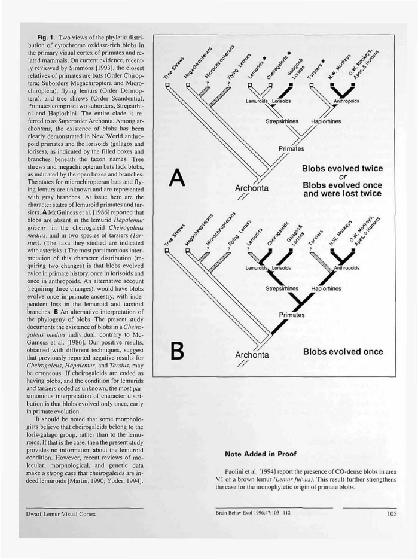
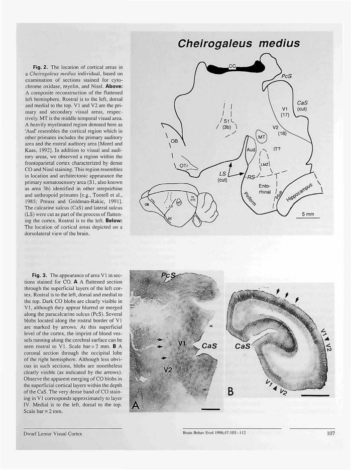
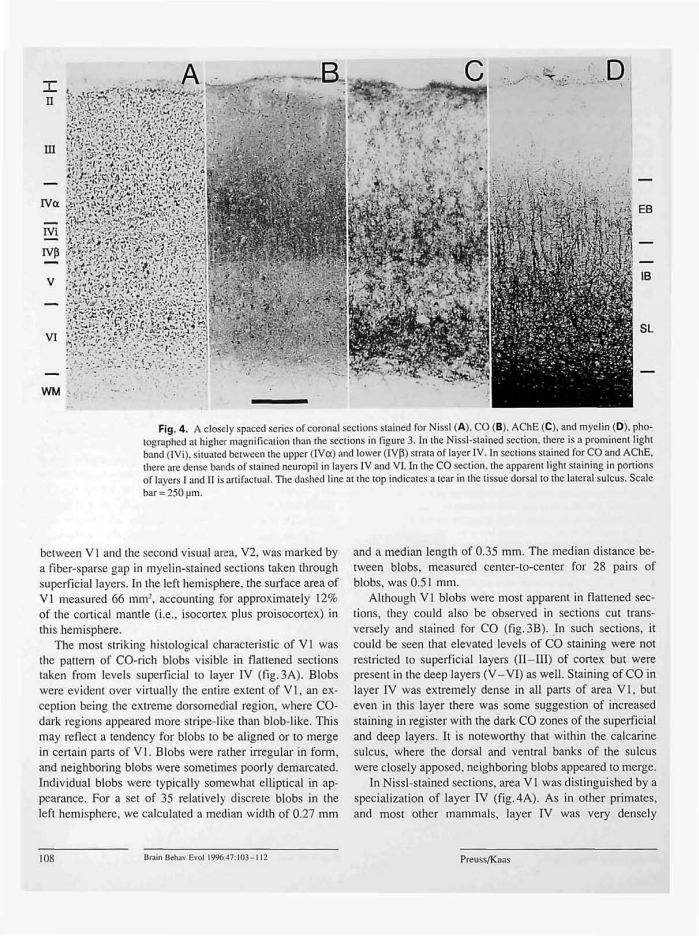
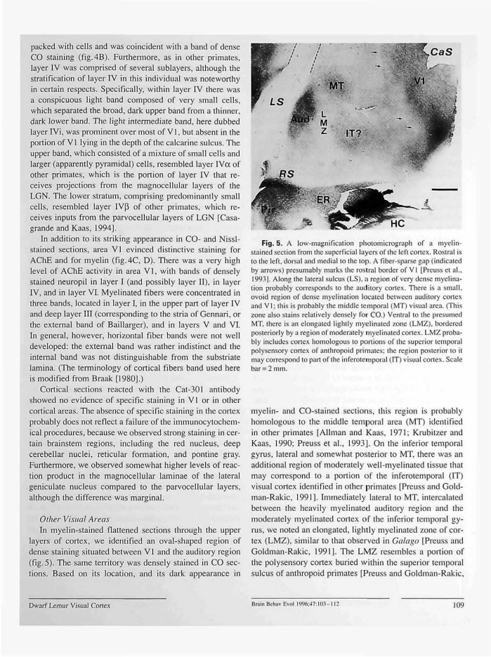

Latest full-dataset recheck: all cases together, source toggles and current inventory
Flatmap tracing reviewFlatmap tracing review
Source image, saved anatomical outlines and scale endpoints. Unfinished fields are NA.
fig02_left — single adult female
Dense tracing on 4 pixels/PDF point source rendering. Anatomical interpretation provisional; hide overlay in the precision review to inspect the printed stroke.
ImageJ ROIs · Calibrated TIFF
| Field | mm² | % neocortex | Status |
|---|
| V1 | 60.874 | NA | provisional; anatomical review required |
| MT (presumed) | 5.036 | NA | provisional; anatomical review required |
| Aud (auditory complex) | 9.857 | NA | provisional; anatomical review required |
| V2 | NA | NA | not_measurable |
| S1 | NA | NA | not_measurable |
| LMZ | NA | NA | not_measurable |
| IT | NA | NA | not_measurable |
fig03_A_photo — single adult female
V1 and V2 continue outside the local section image. Arrows mark blobs, not a recoverable complete field perimeter.
Calibrated TIFF
| Field | mm² | % neocortex | Status |
|---|
| V1 | NA | NA | not_measurable |
| V2 | NA | NA | not_measurable |
fig05_photo — single adult female
No closed complete field perimeters are delineated; apparent stain transitions are diffuse. Field homologies are explicitly presumed in the caption. Retain NA rather than choosing an intensity threshold.
Calibrated TIFF
| Field | mm² | % neocortex | Status |
|---|
| V1 | NA | NA | not_measurable |
| V2 | NA | NA | not_measurable |
| MT (presumed) | NA | NA | not_measurable |
| Aud (auditory complex) | NA | NA | not_measurable |
| LMZ | NA | NA | not_measurable |
| IT | NA | NA | not_measurable |
All-figure source assessment
Preuss_Kaas_1996: 5 numbered figures assessed; 3 field/fragment measurements. Saved observations, where present, are provisional. No certified complete-neocortex denominator is available.
Figure inventory · Methods and limits · Measurements · Complete-field absolute-area summary
Figure 1 all — assessed_excluded
Phylogenetic diagrams. No cortical geometry.
PDF page3; review preview only.

Figure 2 flattened left hemisphere — digitized_provisional
case_flatmap. Full-dataset recheck 2026-10-16: 3 field/component observations across 1 saved view(s). Each perimeter reviewed separately; repeated views and illustrative summaries are retained without adding independent animals. Source-limited totals remain explicit NA. Map IDs: fig02_left.
Main maps: fig02_left
PDF page5; review preview only.

Figure 2 lower brain locator — digitized_provisional
Dorsolateral brain projection. Full-dataset recheck 2026-10-16: 3 field/component observations across 1 saved view(s). Each perimeter reviewed separately; repeated views and illustrative summaries are retained without adding independent animals. Source-limited totals remain explicit NA. Map IDs: fig02_left.
Main maps: fig02_left
PDF page5; review preview only.
Figure 3 B — assessed_excluded
Right coronal cortex. Laminar/radial section, not tangential surface geometry.
PDF page5; review preview only.
Figure 3 flattened cortical photomicrograph — assessed_not_measurable
histological_detail. No supported field area: 2 explicit NA entries. V1 and V2 continue outside the local section image. Arrows mark blobs, not a recoverable complete field perimeter.
Main maps: fig03_A_photo
PDF page5; review preview only.
Figure 4 all — assessed_excluded
Laminar coronal histology. Section thickness/laminar profiles are not a tangential cortical surface.
PDF page6; review preview only.

Figure 5 flattened cortical photomicrograph — assessed_not_measurable
histological_detail. No supported field area: 6 explicit NA entries. No closed complete field perimeters are delineated; apparent stain transitions are diffuse. Field homologies are explicitly presumed in the caption. Retain NA rather than choosing an intensity threshold.
Main maps: fig05_photo
PDF page7; review preview only.

Enlarged source-toggle precision review